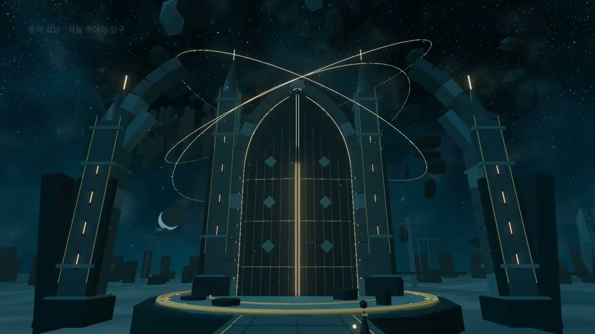

SF · 시네마틱
하늘로 올라간 바다와 두 세계를 잇는 역. 부산에서 출발한 상상의 세계.
익숙한 도시에서 새로운 이야기를 발견합니다.
버츄얼 부산은 장소와 문화를 AI, 캐릭터, 시네마틱으로 다시 바라보는 콘텐츠 채널입니다.

SF BUSAN / EP. 01채널의 실제 작품에서 출발한 네 가지 시선으로 부산을 만나보세요.
하늘로 올라간 바다와 두 세계를 잇는 역. 부산에서 출발한 상상의 세계.
토마토의 영화제 나들이부터 아기 용의 여행까지. 장소를 누군가의 이야기로.
스테인드글라스, 풍속화, 베이커리. 익숙한 풍경을 새로운 질감으로.
바다와 커피 문화에서 얻은 영감을 가상의 공간과 분위기로 기록합니다.
선정 영상을 불러오고 있습니다.
만들어진 콘텐츠와 실제 운영의 기록을 함께 연결합니다.
역사·로컬·예술의 세 시선으로 부산을 읽고, 걷고, 기록하는 여행 경험 편집 서비스.
서비스 소개 보기 →Instagram·Facebook·YouTube의 수집된 성과를 보고, 다음 콘텐츠를 위한 단서를 찾습니다.
SNS 대시보드 보기 →부산의 관광 자원과 지역 문화를 조사한 기록을 모읍니다.
02 / CREATION채널에 공개한 영상과 숏폼, 포스터 등 제작 결과물을 살펴봅니다.
03 / CHANNELS공개 채널에서 수집한 실제 성과와 운영 데이터를 확인합니다.
04 / TEAM WORK팀 프로젝트의 기획과 제작 과정을 정리하는 공간입니다.
영상에는 AI로 재구성한 가상의 인물·공간이 포함됩니다. 비공식 팬메이드 작업의 성격은 각 영상 설명에서 확인할 수 있습니다.